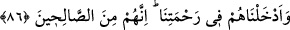

hükmetmeyi tekeffül ederse mülkünü ona teslim et.” diye vahyetti. O da öyle yaptı. Bir
genç: “Bunları yerine getirmeyi tekeffül ederim.” dedi ve kefil oldu. Dediğini de tam
olarak yerine getirdi. Bunun üzerine Allah ona peygamberlik verdi ve onu ‘Zü’l-kifl’
diye isimlendirdi.
“Hepsi de” bunlardan her biri “sabreden kimselerdendi.” Yâni, tâatların
meşakkatlerine ve belâlara katlanmaya sabretme konusunda kâmil kimselerdendi.
Nitekim İsmail (a.s.), babası tarafından kesilmeye yatırıldığında sabretmiş ve:
“Babacığım, sana emredileni yap, inşaallah beni sabredenlerden bulacaksın.” (es-
Sâffât, 37/102) demişti. Yine o, üzerinde hiçbir ziraat ve hayvancılık yapılmayan, binâ
olunmayan bir beldede ikamet etmeye sabretti. Bu sabrına binâen Allah da ona ikram
etti, soyundan peygamberlerin sonuncusu Hz. Muhammed (a.s.)’ı getirdi.
İdris de okumaya sabretmişti. Zülkifl (a.s.)’a gelince; o da gece ibadetine ve gündüz
oruca devam konusunda sabretti. İnsanlar arasında hükmederken onların ezâlarına
sabretti ve onlara kızmadı.
Burada işâret vardır ki Allah’a itâat ve O’na isyan etmekten sakınma ya da mal, âile
ve nefse gelen musîbetler konusunda sabreden herkes, ‘O ne güzel kul’ mertebesine
ermeyi hak eder ve Allah’ın husûsî rahmetine dâhil edilmeye lâyık olur. Nitekim sonraki
âyette şöyle buyrulmaktadır:
86. Onları rahmetimize kabul ettik. Onlar hakikaten iyi kimselerdendi.
“Onları” peygamberlik ve diğer hususlar gibi husûsî “rahmetimize kabul ettik.
Onlar hakikaten iyi kimselerdendi.” Yâni yilikte kâmildiler. Çünkü onlar, Allah’ın
peygamberleridirler.
Peygamberlerin
salâhı/iyiliği
de
fesâda
uğramaktan
mâsumdur/korunmuştur.
Büyüklerden biri şöyle buyurmuştur: “Mü’minler günah işler, sonra tevbe ederler.
Ancak tevbe, Allah’ın kabul edeceği şartlarda olmalıdır. Velîler günah işlemezler, ama
hatâ etmeleri câiz olduğundan günah işleme ihtimalleri vardır. Bayezid Bistâmî’ye:
“Ârif isyân eder mi?” diye soruldu. O da: “Allah’ın emri mutlaka yerine gelecek,
yazılmış bir kaderdir.” (el-Ahzâb, 33/38) diye cevap verdi. Eğer ârif, inâyet ve vusûl
ehlinden ise tekrar makamına iâde olunur. Onun tevbesi, makamına göredir. Onun bu
tevbenin kuvveti ve mevkiinin yüksekliği ile gafletle geçen vaktini telâfî edip sanki
hiçbir şey zâyi etmemiş gibi olması umulur. Bu tevbe, Hz. Peygamber (s.a.)’in kendisi
için: “Eğer bu tevbe, göklerde ve yerde olanlara taksim edilse hepsine yeterdi.”[207]
buyurduğu Mâiz’ın tevbesi gibi olan tevbedir.
Peygamberler günah işlemezler. İşleme imkânları yoktur. Çünkü mâsumdurlar.
Bil ki salâhın/iyi olmanın bir başlangıcı vardır. Bu ise şer‘î esaslara ve hükümlere